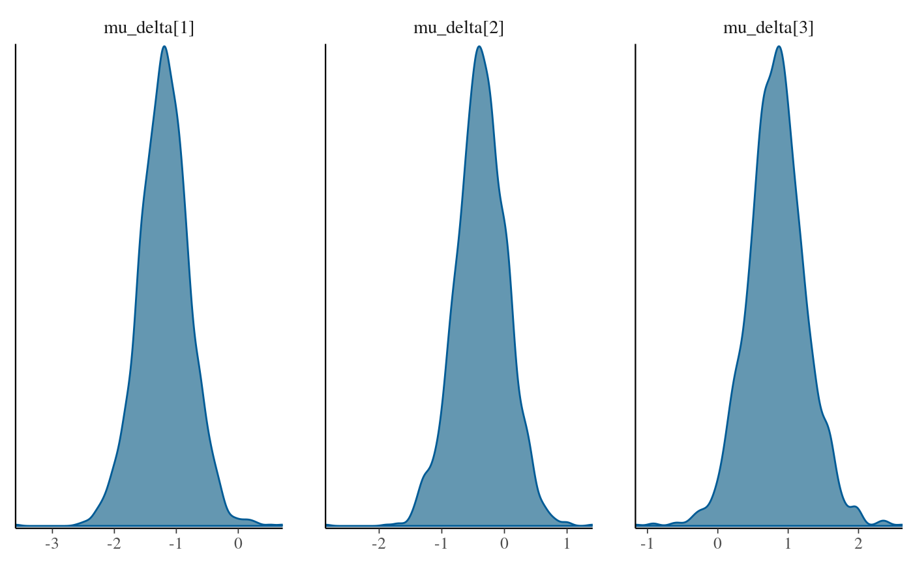
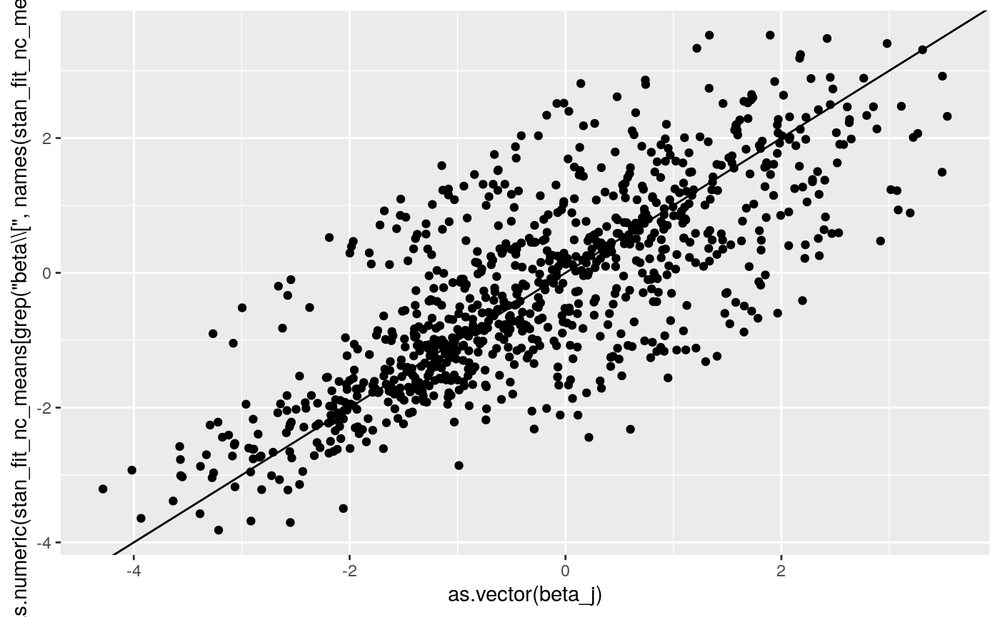

Test Simple 3-level Multivariate Normal Model
John Flournoy
2018-03-29
The goal of this vignette is to demonstrate that the multivariate normal model that I will use for each parameter in the learning model is able to be estimated accurately and without prohibitively excessive computer time. In these examples I show that accounting for the nested structure of data with observations nested in participants nested in sample may be important. I also show that the 3-level model using both centered and non-centered parameterization of the 3rd level group means gives similar results. Finally, it may be helpful to note that the centered (that is, standard) parameterization finishes sampling in much less time than the non-centered model.
Generate data where there are 3 conditions, and individual variation in probability of choosing ‘left’ for each condition. Set the mean probability of left for each condition to values in beta_mu below.
library(probly)
set.seed(150319/2018)
j <- 300 #number of subjects
t <- 100 #number of trials
g <- 4 #number of subsamples
c <- 3 #number of conditions
n <- t*c*j #number of observations
gg <- sample(1:g, size = j, replace = T) #group IDs
hyper_gamma_mu <- c(-1, 0, 1) #The mean population effect
hyper_gamma_sigma <- 1
gamma_mu <- matrix(rnorm(c*g, hyper_gamma_mu, hyper_gamma_sigma), nrow = g, byrow = T) #specific sample mean effects
gamma_sigma <- matrix(
c(1, .2, .2,
.2, 1, .2,
.2, .2, 1),
nrow = 3, byrow = T
) #correlation among random effects at between individuals in the same sample
beta_j <- t(apply(gamma_mu[gg,], 1, function(mu) {MASS::mvrnorm(1, mu, gamma_sigma)}))
beta_j_df <- as.data.frame(beta_j)
beta_j_df$b0 <- beta_j_df[,1]
beta_j_df$b1 <- beta_j_df[,2] - beta_j_df[,1]
beta_j_df$b2 <- beta_j_df[,3] - beta_j_df[,1]
summary(beta_j_df)
#> V1 V2 V3 b0
#> Min. :-4.0175 Min. :-4.0880 Min. :-2.42453 Min. :-4.0175
#> 1st Qu.:-1.9956 1st Qu.:-1.3693 1st Qu.:-0.02771 1st Qu.:-1.9956
#> Median :-1.2536 Median :-0.4523 Median : 0.82168 Median :-1.2536
#> Mean :-1.2278 Mean :-0.3233 Mean : 0.79465 Mean :-1.2278
#> 3rd Qu.:-0.5697 3rd Qu.: 0.6316 3rd Qu.: 1.59760 3rd Qu.:-0.5697
#> Max. : 2.7481 Max. : 3.5546 Max. : 4.13714 Max. : 2.7481
#> b1 b2
#> Min. :-3.3279 Min. :-2.876
#> 1st Qu.:-0.2630 1st Qu.: 1.144
#> Median : 0.7616 Median : 2.071
#> Mean : 0.9045 Mean : 2.022
#> 3rd Qu.: 2.0397 3rd Qu.: 2.968
#> Max. : 5.5926 Max. : 5.951
cor(beta_j_df[,1:3])
#> V1 V2 V3
#> V1 1.0000000 0.1689937 0.2237496
#> V2 0.1689937 1.0000000 -0.1868787
#> V3 0.2237496 -0.1868787 1.0000000
cor(beta_j_df[,4:6])
#> b0 b1 b2
#> b0 1.0000000 -0.5600779 -0.6023876
#> b1 -0.5600779 1.0000000 0.1827144
#> b2 -0.6023876 0.1827144 1.0000000
lapply(1:g, function(grp) cor(beta_j_df[gg == grp,1:3]))
#> [[1]]
#> V1 V2 V3
#> V1 1.0000000 0.2093452 0.2796338
#> V2 0.2093452 1.0000000 0.3103567
#> V3 0.2796338 0.3103567 1.0000000
#>
#> [[2]]
#> V1 V2 V3
#> V1 1.0000000 0.2573429 0.4433277
#> V2 0.2573429 1.0000000 0.2593508
#> V3 0.4433277 0.2593508 1.0000000
#>
#> [[3]]
#> V1 V2 V3
#> V1 1.0000000 0.2500850 0.1578322
#> V2 0.2500850 1.0000000 0.0453528
#> V3 0.1578322 0.0453528 1.0000000
#>
#> [[4]]
#> V1 V2 V3
#> V1 1.0000000 0.1453341 0.3041265
#> V2 0.1453341 1.0000000 0.2680003
#> V3 0.3041265 0.2680003 1.0000000
dd <- data.frame(id = as.factor(1:j),
grp = as.factor(gg),
condition = as.factor(rep(rep(1:3, each = n/j/3), each = j)))
design <- model.matrix(~ 0 + id:condition, dd)
dd$theta <- design %*% as.vector(beta_j)
dd$p <- arm::invlogit(dd$theta)
dd$y <- rbinom(dim(dd)[1], 1, dd$p)
dplyr::summarize(
dplyr::group_by(dd, grp),
N = length(unique(id)))
#> # A tibble: 4 x 2
#> grp N
#> <fct> <int>
#> 1 1 87
#> 2 2 68
#> 3 3 70
#> 4 4 75library(lme4)
#> Loading required package: Matrix
library(brms)
#> Loading required package: Rcpp
#> Loading required package: ggplot2
#> Loading 'brms' package (version 2.1.0). Useful instructions
#> can be found by typing help('brms'). A more detailed introduction
#> to the package is available through vignette('brms_overview').
#> Run theme_set(theme_default()) to use the default bayesplot theme.
#>
#> Attaching package: 'brms'
#> The following object is masked from 'package:lme4':
#>
#> ngrps
library(rstan)
#> Loading required package: StanHeaders
#> rstan (Version 2.17.3, GitRev: 2e1f913d3ca3)
#> For execution on a local, multicore CPU with excess RAM we recommend calling
#> options(mc.cores = parallel::detectCores()).
#> To avoid recompilation of unchanged Stan programs, we recommend calling
#> rstan_options(auto_write = TRUE)
library(future)
plan('multiprocess')
glm_fit <- glm(y ~ 1 + condition, data = dd, family = 'binomial')
lme4_fit_fn <- '/data/jflournoy/split/probly/lme4_test_fit.RDS'
lme4_fit_future <- future::future(
CachedFit(
{
lme4::glmer(y ~ 1 + condition + (1 + condition | grp/id), data = dd, family = 'binomial')
},
rds_filename = lme4_fit_fn))
lme4_fit_2L_fn <- '/data/jflournoy/split/probly/lme4_test_fit_2L.RDS'
lme4_fit_2L_future <- future::future(
CachedFit(
{
lme4::glmer(y ~ 1 + condition + (1 + condition | id), data = dd, family = 'binomial')
},
rds_filename = lme4_fit_2L_fn))
lme4_fit_2L_2rx_fn <- '/data/jflournoy/split/probly/lme4_test_fit_2L_2rx.RDS'
lme4_fit_2L_2rx_future <- future::future(
CachedFit(
{
lme4::glmer(y ~ 1 + condition + (1 + condition | id) + (1 + condition | grp),
data = dd, family = 'binomial')
},
rds_filename = lme4_fit_2L_2rx_fn))
summary(glm_fit)
#>
#> Call:
#> glm(formula = y ~ 1 + condition, family = "binomial", data = dd)
#>
#> Deviance Residuals:
#> Min 1Q Median 3Q Max
#> -1.4492 -1.0791 -0.7933 0.9280 1.6183
#>
#> Coefficients:
#> Estimate Std. Error z value Pr(>|z|)
#> (Intercept) -0.99479 0.01301 -76.49 <2e-16 ***
#> condition2 0.75904 0.01744 43.51 <2e-16 ***
#> condition3 1.61427 0.01777 90.86 <2e-16 ***
#> ---
#> Signif. codes: 0 '***' 0.001 '**' 0.01 '*' 0.05 '.' 0.1 ' ' 1
#>
#> (Dispersion parameter for binomial family taken to be 1)
#>
#> Null deviance: 123997 on 89999 degrees of freedom
#> Residual deviance: 115011 on 89997 degrees of freedom
#> AIC: 115017
#>
#> Number of Fisher Scoring iterations: 4
rbind(
means = unlist(dplyr::summarize(dplyr::group_by(dd, condition), mean = mean(y))[,2]),
glm_coef = c(coef(glm_fit)[1], sum(coef(glm_fit)[1:2]), sum(coef(glm_fit)[c(1,3)])),
glm_p = arm::invlogit(c(coef(glm_fit)[1], sum(coef(glm_fit)[1:2]), sum(coef(glm_fit)[c(1,3)]))))
#> mean1 mean2 mean3
#> means 0.2699667 0.4413333 0.6501000
#> glm_coef -0.9947917 -0.2357525 0.6194788
#> glm_p 0.2699667 0.4413333 0.6501000
Sys.sleep(3)
if(resolved(lme4_fit_future)){
lme4_fit <- future::value(lme4_fit_future)
print(summary(lme4_fit))
rbind(
means = unlist(dplyr::summarize(dplyr::group_by(dd, condition), mean = mean(y))[,2]),
lme4_coef = c(fixef(lme4_fit)[1], sum(fixef(lme4_fit)[1:2]), sum(fixef(lme4_fit)[c(1,3)])),
lme4_p = arm::invlogit(c(fixef(lme4_fit)[1], sum(fixef(lme4_fit)[1:2]), sum(fixef(lme4_fit)[c(1,3)]))))
print(
ggplot2::qplot(as.vector(hyper_gamma_mu),
fixef(lme4_fit) + c(0, fixef(lme4_fit)[c(1,1)])) +
geom_abline(intercept = 0, slope = 1))
print(
ggplot2::qplot(as.vector(gamma_mu),
unlist(coef(lme4_fit)$grp+
cbind(rep(0, 4),coef(lme4_fit)$grp[,c(1,1)]))) +
geom_abline(intercept = 0, slope = 1))
print(
ggplot2::qplot(as.vector(beta_j),
unlist(coef(lme4_fit)$`id:grp`+
cbind(rep(0, dim(beta_j)[1]),coef(lme4_fit)$`id:grp`[,c(1,1)]))) +
geom_abline(intercept = 0, slope = 1))
}
#> Generalized linear mixed model fit by maximum likelihood (Laplace
#> Approximation) [glmerMod]
#> Family: binomial ( logit )
#> Formula: y ~ 1 + condition + (1 + condition | grp/id)
#> Data: dd
#>
#> AIC BIC logLik deviance df.resid
#> 96318.7 96459.8 -48144.4 96288.7 89985
#>
#> Scaled residuals:
#> Min 1Q Median 3Q Max
#> -5.5537 -0.6271 -0.2850 0.6748 5.9928
#>
#> Random effects:
#> Groups Name Variance Std.Dev. Corr
#> id:grp (Intercept) 1.2781 1.1306
#> condition2 1.7325 1.3163 -0.69
#> condition3 1.5496 1.2448 -0.66 0.56
#> grp (Intercept) 0.0547 0.2339
#> condition2 0.7732 0.8793 -0.19
#> condition3 0.4639 0.6811 -0.49 -0.65
#> Number of obs: 90000, groups: id:grp, 300; grp, 4
#>
#> Fixed effects:
#> Estimate Std. Error z value Pr(>|z|)
#> (Intercept) -1.2233 0.1319 -9.274 < 2e-16 ***
#> condition2 0.8556 0.3979 2.150 0.0315 *
#> condition3 2.0514 0.3217 6.377 1.81e-10 ***
#> ---
#> Signif. codes: 0 '***' 0.001 '**' 0.01 '*' 0.05 '.' 0.1 ' ' 1
#>
#> Correlation of Fixed Effects:
#> (Intr) cndtn2
#> condition2 -0.230
#> condition3 -0.515 -0.547


if(resolved(lme4_fit_2L_future)){
lme4_fit_2L <- future::value(lme4_fit_2L_future)
print(summary(lme4_fit_2L))
rbind(
means = unlist(dplyr::summarize(dplyr::group_by(dd, condition), mean = mean(y))[,2]),
lme4_coef = c(fixef(lme4_fit_2L)[1], sum(fixef(lme4_fit_2L)[1:2]), sum(fixef(lme4_fit_2L)[c(1,3)])),
lme4_p = arm::invlogit(c(fixef(lme4_fit_2L)[1], sum(fixef(lme4_fit_2L)[1:2]), sum(fixef(lme4_fit_2L)[c(1,3)]))))
print(
ggplot2::qplot(as.vector(beta_j),
unlist(coef(lme4_fit_2L)$`id`+
cbind(rep(0, dim(beta_j)[1]),coef(lme4_fit_2L)$id[,c(1,1)]))) +
geom_abline(intercept = 0, slope = 1))
}
#> Generalized linear mixed model fit by maximum likelihood (Laplace
#> Approximation) [glmerMod]
#> Family: binomial ( logit )
#> Formula: y ~ 1 + condition + (1 + condition | id)
#> Data: dd
#>
#> AIC BIC logLik deviance df.resid
#> 96575.2 96659.9 -48278.6 96557.2 89991
#>
#> Scaled residuals:
#> Min 1Q Median 3Q Max
#> -5.8025 -0.6205 -0.2837 0.6769 6.0092
#>
#> Random effects:
#> Groups Name Variance Std.Dev. Corr
#> id (Intercept) 1.332 1.154
#> condition2 2.595 1.611 -0.58
#> condition3 2.038 1.428 -0.61 0.20
#> Number of obs: 90000, groups: id, 300
#>
#> Fixed effects:
#> Estimate Std. Error z value Pr(>|z|)
#> (Intercept) -1.23053 0.06855 -17.951 <2e-16 ***
#> condition2 0.93459 0.09535 9.802 <2e-16 ***
#> condition3 2.02188 0.08524 23.721 <2e-16 ***
#> ---
#> Signif. codes: 0 '***' 0.001 '**' 0.01 '*' 0.05 '.' 0.1 ' ' 1
#>
#> Correlation of Fixed Effects:
#> (Intr) cndtn2
#> condition2 -0.585
#> condition3 -0.615 0.225
if(resolved(lme4_fit_2L_2rx_future)){
lme4_fit_2L_2rx <- future::value(lme4_fit_2L_2rx_future)
print(summary(lme4_fit_2L_2rx))
rbind(
means = unlist(dplyr::summarize(dplyr::group_by(dd, condition), mean = mean(y))[,2]),
lme4_coef = c(fixef(lme4_fit_2L_2rx)[1], sum(fixef(lme4_fit_2L_2rx)[1:2]), sum(fixef(lme4_fit_2L_2rx)[c(1,3)])),
lme4_p = arm::invlogit(c(fixef(lme4_fit_2L_2rx)[1], sum(fixef(lme4_fit_2L_2rx)[1:2]), sum(fixef(lme4_fit_2L_2rx)[c(1,3)]))))
print(
ggplot2::qplot(as.vector(beta_j),
unlist(coef(lme4_fit_2L_2rx)$`id`+
cbind(rep(0, dim(beta_j)[1]),coef(lme4_fit_2L_2rx)$id[,c(1,1)]))) +
geom_abline(intercept = 0, slope = 1))
}
#> Generalized linear mixed model fit by maximum likelihood (Laplace
#> Approximation) [glmerMod]
#> Family: binomial ( logit )
#> Formula: y ~ 1 + condition + (1 + condition | id) + (1 + condition | grp)
#> Data: dd
#>
#> AIC BIC logLik deviance df.resid
#> 96318.7 96459.8 -48144.4 96288.7 89985
#>
#> Scaled residuals:
#> Min 1Q Median 3Q Max
#> -5.5537 -0.6271 -0.2850 0.6748 5.9928
#>
#> Random effects:
#> Groups Name Variance Std.Dev. Corr
#> id (Intercept) 1.2781 1.1306
#> condition2 1.7325 1.3163 -0.69
#> condition3 1.5496 1.2448 -0.66 0.56
#> grp (Intercept) 0.0547 0.2339
#> condition2 0.7732 0.8793 -0.19
#> condition3 0.4639 0.6811 -0.49 -0.65
#> Number of obs: 90000, groups: id, 300; grp, 4
#>
#> Fixed effects:
#> Estimate Std. Error z value Pr(>|z|)
#> (Intercept) -1.2233 0.1319 -9.274 < 2e-16 ***
#> condition2 0.8556 0.3979 2.150 0.0315 *
#> condition3 2.0514 0.3217 6.377 1.81e-10 ***
#> ---
#> Signif. codes: 0 '***' 0.001 '**' 0.01 '*' 0.05 '.' 0.1 ' ' 1
#>
#> Correlation of Fixed Effects:
#> (Intr) cndtn2
#> condition2 -0.230
#> condition3 -0.515 -0.547
The Stan model that is being estimated is:
\[ \text{press_right}_{i} \sim \text{bernoulli_logit}(x_{i}\beta_{jj[i]}) \\ \beta_{j} \sim \mathcal{N}_{\text{mv}}(\delta_{mm[j]}, \Sigma_{\beta}) \\ \Sigma = \text{diag_matrix}(\tau) \Omega \text{diag_matrix}(\tau) \\ \tau_{k} \sim \text{Cauchy}(0, 2.5) \\ \Omega \sim \text{lkj_corr}(2)\\ \delta_{mk} \sim \mathcal{N} (\mu_{\delta k}, \sigma_{\delta}) \\ \mu_{\delta} \sim \mathcal{N} (0, 5) \\ \sigma_{\delta} \sim \text{exponential} (1) \]
Where
- press_right is a binary indicator that the participant pressed the key on the right,
- \(x_{i}\) is dummy coded for each trial’s condition,
- \(\beta_j\) is a vector of subject-level (for subject \(jj[i]\)) coefficients for all K conditions,
- \(\delta_m\) is a vector of K means (again, per condition) for participant \(j\)’s group \(mm[j]\),
- \(\Sigma_{\beta}\) is the covariance matrix, optimized as recommended in the Stan manual via \(\tau\) and \(\Omega\),
- \(\mu_{\delta}\) is the population mean for each K condition,
- and \(\sigma_{\delta}\) is the scale parameter for the population means.
# data {
# int<lower=1> N; //number of subjects
# int<lower=1> T; //max number of trials
# int<lower=2> K; //number of trial predictors (in this case, conditions)
# int<lower=1> L; //number of subject-level predictors. 1 = intercept only
# int<lower=1,upper=T> Tsubj[N]; //trials per subject
# int<lower=-1,upper=1> press_right[N,T]; //choices "0" = left, "1" = right
# int<lower=-1,upper=3> condition[N,T]; //1 = ctrl, 2 = mateseeking, 3 = status
# matrix[N, L] u; //group predictors. u[,1] = 1 for intercept
# }
press_right_mat <- matrix(dd$y, nrow = j)
condition_mat <- matrix(as.numeric(dd$condition), nrow = j)
data_for_stan <- list(
N = j,
T = t*c,
K = c,
M = g,
mm = gg,
Tsubj = rep(t*3, j),
press_right = press_right_mat,
condition = condition_mat
)
stan_fit_fn.orig <- '/data/jflournoy/split/probly/stan_test_fit_c_l3.RDS'
stan_fit_fn.repar <- '/data/jflournoy/split/probly/stan_test_fit_non_c_l3.RDS'
if(!file.exists(stan_fit_fn.orig)){
plan(multiprocess)
stan_m_c <- rstan::stan_model(file = '../exec/splt_rl_mvnorm_test_c_l3.stan')
stan_optim_c <- rstan::optimizing(stan_m_c,
data = data_for_stan)
round(stan_optim_c$par[grep('delta', names(stan_optim_c$par))],3)
stan_fit_test_c_f <- future({rstan::stan(file = '../exec/splt_rl_mvnorm_test_c_l3.stan',
data = data_for_stan, chains = 4, iter = 1500,
warmup = 1000, cores = 4, open_progress = T)})
stan_fit_test_c <- value(stan_fit_test_c_f)
saveRDS(stan_fit_test_c, stan_fit_fn.orig)
} else {
stan_fit_test_c <- readRDS(stan_fit_fn.orig)
}
if(!file.exists(stan_fit_fn.repar)){
plan(multiprocess)
stan_m_nc <- rstan::stan_model(file = '../exec/splt_rl_mvnorm_test_non_c_l3.stan')
stan_optim_nc <- rstan::optimizing(stan_m_nc,
data = data_for_stan)
round(stan_optim_nc$par[grep('delta', names(stan_optim_nc$par))],3)
stan_fit_test_nc_f <- future({rstan::stan(file = '../exec/splt_rl_mvnorm_test_non_c_l3.stan',
data = data_for_stan, chains = 4, iter = 1500,
warmup = 1000, cores = 4, open_progress = T)})
stan_fit_test_nc <- value(stan_fit_test_nc_f)
saveRDS(stan_fit_test_nc, stan_fit_fn.repar)
} else {
stan_fit_test_nc <- readRDS(stan_fit_fn.repar)
}
par_names.c <- grep('(delta|beta)', names(stan_fit_test_c), value = T)
par_names.nc <- grep('(delta|beta)', names(stan_fit_test_nc), value = T)
stan_fit_extract.c <- rstan::extract(stan_fit_test_c, pars = par_names.c)
stan_fit_extract.nc <- rstan::extract(stan_fit_test_nc, pars = par_names.nc)
bayesplot::mcmc_dens(as.array(stan_fit_test_c), regex_pars = 'mu_delta\\[\\d\\]')
bayesplot::mcmc_dens(as.array(stan_fit_test_nc), regex_pars = 'mu_delta\\[\\d\\]')
bayesplot::mcmc_trace(as.array(stan_fit_test_c), regex_pars = 'mu_delta\\[\\d\\]')bayesplot::mcmc_trace(as.array(stan_fit_test_nc), regex_pars = 'mu_delta\\[\\d\\]')
stan_fit_c_means <- lapply(stan_fit_extract.c, mean)
stan_fit_nc_means <- lapply(stan_fit_extract.nc, mean)
print(
ggplot2::qplot(as.vector(beta_j),
as.numeric(
stan_fit_c_means[grep('beta\\[', names(stan_fit_c_means))])) +
geom_abline(intercept = 0, slope = 1))
print(
ggplot2::qplot(as.vector(beta_j),
as.numeric(
stan_fit_nc_means[grep('beta\\[', names(stan_fit_nc_means))])) +
geom_abline(intercept = 0, slope = 1))
print(
ggplot2::qplot(as.vector(gamma_mu),
as.numeric(
stan_fit_c_means[grep('delta\\[\\d,', names(stan_fit_c_means))])) +
geom_abline(intercept = 0, slope = 1))print(
ggplot2::qplot(as.vector(gamma_mu),
as.numeric(
stan_fit_nc_means[grep('delta\\[\\d,', names(stan_fit_nc_means))])) +
geom_abline(intercept = 0, slope = 1))
rbind(stan = stan_fit_c_means[grep('mu_delta', names(stan_fit_c_means))],
raw_p = arm::logit(unlist(dplyr::summarize(dplyr::group_by(dd, condition), mean = mean(y))[,2])),
group_p = apply(gamma_mu, 2, mean))
#> mu_delta[1] mu_delta[2] mu_delta[3]
#> stan -1.190436 -0.3686154 0.836373
#> raw_p -0.9947917 -0.2357525 0.6194788
#> group_p -1.227143 -0.4394004 0.7905008
rbind(stan = stan_fit_nc_means[grep('mu_delta', names(stan_fit_nc_means))],
raw_p = arm::logit(unlist(dplyr::summarize(dplyr::group_by(dd, condition), mean = mean(y))[,2])),
group_p = apply(gamma_mu, 2, mean))
#> mu_delta[1] mu_delta[2] mu_delta[3]
#> stan -1.162693 -0.3534274 0.8202649
#> raw_p -0.9947917 -0.2357525 0.6194788
#> group_p -1.227143 -0.4394004 0.7905008
stan_fit_c_means$sigma_delta
#> [1] 0.8038438
stan_fit_nc_means$sigma_delta
#> [1] 0.8042396
summary(stan_fit_test_c, pars = grep('delta',par_names.c, value = T), probs = c(.025, .5, .975))$summary
#> mean se_mean sd 2.5% 50%
#> mu_delta[1] -1.19043600 0.009175692 0.4103494 -2.00752410 -1.19217483
#> mu_delta[2] -0.36861538 0.009129239 0.4082720 -1.22505029 -0.37287830
#> mu_delta[3] 0.83637300 0.009292838 0.4155883 0.05159399 0.83590059
#> sigma_delta 0.80384382 0.004714157 0.2108235 0.50265092 0.76334216
#> delta[1,1] -1.29003323 0.013280930 0.1278729 -1.53910172 -1.28924739
#> delta[2,1] -1.30984239 0.009890188 0.1351301 -1.57096298 -1.30849534
#> delta[3,1] -0.75797525 0.009174405 0.1317907 -1.01197304 -0.76139865
#> delta[4,1] -1.48716536 0.010171997 0.1325258 -1.75646132 -1.48719736
#> delta[1,2] 1.06425176 0.006807915 0.1075503 0.83998079 1.06821022
#> delta[2,2] -1.06330302 0.007814280 0.1228586 -1.30564928 -1.06457622
#> delta[3,2] -0.45419537 0.011147326 0.1257497 -0.69478455 -0.45126109
#> delta[4,2] -0.99447886 0.007960459 0.1184132 -1.22552953 -0.99331691
#> delta[1,3] -0.05010475 0.007040183 0.1071256 -0.25501624 -0.05146253
#> delta[2,3] 0.74431965 0.008074109 0.1245280 0.49444595 0.73854894
#> delta[3,3] 0.97109405 0.007441031 0.1112167 0.76175588 0.97077260
#> delta[4,3] 1.65394947 0.006726480 0.1199622 1.41998688 1.65581808
#> 97.5% n_eff Rhat
#> mu_delta[1] -0.3707453 2000.0000 1.002813
#> mu_delta[2] 0.4145897 2000.0000 1.001045
#> mu_delta[3] 1.6557548 2000.0000 1.001098
#> sigma_delta 1.3184927 2000.0000 1.001660
#> delta[1,1] -1.0391111 92.7044 1.026023
#> delta[2,1] -1.0501067 186.6788 1.001170
#> delta[3,1] -0.5020760 206.3543 1.011909
#> delta[4,1] -1.2296722 169.7418 1.017266
#> delta[1,2] 1.2622266 249.5715 1.011011
#> delta[2,2] -0.8260618 247.1913 1.017098
#> delta[3,2] -0.2081034 127.2544 1.025577
#> delta[4,2] -0.7579529 221.2708 1.010884
#> delta[1,3] 0.1526026 231.5361 1.004511
#> delta[2,3] 1.0027901 237.8728 1.007483
#> delta[3,3] 1.1987591 223.3952 1.021901
#> delta[4,3] 1.8836240 318.0629 1.014358
summary(stan_fit_test_nc, pars = grep('delta',par_names.nc, value = T), probs = c(.025, .5, .975))$summary
#> mean se_mean sd 2.5% 50%
#> mu_delta[1] -1.16269273 0.018645989 0.3909543 -1.921430020 -1.17291204
#> mu_delta[2] -0.35342743 0.021691910 0.4220587 -1.222371292 -0.33908163
#> mu_delta[3] 0.82026485 0.021207903 0.4154852 0.002475087 0.81519036
#> sigma_delta 0.80423959 0.009427298 0.2146855 0.500985535 0.76222704
#> delta_raw[1,1] -0.17332066 0.024531459 0.4962157 -1.141615488 -0.17300542
#> delta_raw[2,1] -0.19806005 0.024004897 0.5066053 -1.184894863 -0.20365825
#> delta_raw[3,1] 0.49234107 0.026892550 0.5292283 -0.539726178 0.48836849
#> delta_raw[4,1] -0.41767603 0.027082819 0.5074712 -1.426668662 -0.40875410
#> delta_raw[1,2] 1.87344300 0.029183943 0.6916709 0.545735634 1.86109362
#> delta_raw[2,2] -0.95714628 0.031046640 0.5810495 -2.087261079 -0.96042475
#> delta_raw[3,2] -0.16442341 0.027827881 0.5248824 -1.196405113 -0.16884929
#> delta_raw[4,2] -0.85334894 0.030022619 0.5598560 -1.942417786 -0.86572549
#> delta_raw[1,3] -1.16635987 0.028956949 0.5772055 -2.309412605 -1.16572935
#> delta_raw[2,3] -0.11593031 0.027258724 0.5133032 -1.144703974 -0.11131769
#> delta_raw[3,3] 0.19972561 0.029992453 0.5248678 -0.789251108 0.19482733
#> delta_raw[4,3] 1.08297439 0.026842785 0.5721005 -0.008156408 1.08077888
#> delta[1,1] -1.30302100 0.011674998 0.1300011 -1.570785860 -1.30270619
#> delta[2,1] -1.32292556 0.011158158 0.1419978 -1.596785537 -1.31461835
#> delta[3,1] -0.79626986 0.019319648 0.1494726 -1.120883814 -0.78769049
#> delta[4,1] -1.48819065 0.012061761 0.1272798 -1.726155344 -1.48449288
#> delta[1,2] 1.06436500 0.010606113 0.1156182 0.836098520 1.06652706
#> delta[2,2] -1.07531380 0.010900829 0.1285082 -1.336286921 -1.07514393
#> delta[3,2] -0.47523626 0.010237325 0.1207604 -0.708037366 -0.47760273
#> delta[4,2] -0.99765519 0.010353594 0.1171438 -1.225488118 -0.99821446
#> delta[1,3] -0.06408593 0.008913977 0.1085670 -0.280036197 -0.06438867
#> delta[2,3] 0.73036346 0.008036718 0.1183135 0.504117751 0.72644345
#> delta[3,3] 0.97218021 0.011412725 0.1240980 0.737036405 0.97051666
#> delta[4,3] 1.63862731 0.008423839 0.1183751 1.421051838 1.63574630
#> 97.5% n_eff Rhat
#> mu_delta[1] -0.36455101 439.62370 1.0022321
#> mu_delta[2] 0.50292445 378.57349 1.0076629
#> mu_delta[3] 1.68946098 383.80940 0.9992077
#> sigma_delta 1.32556907 518.59811 1.0094901
#> delta_raw[1,1] 0.81585166 409.16104 1.0008227
#> delta_raw[2,1] 0.80898873 445.38923 1.0014697
#> delta_raw[3,1] 1.56650393 387.27744 1.0039714
#> delta_raw[4,1] 0.57659683 351.10348 1.0088500
#> delta_raw[1,2] 3.28230814 561.70863 1.0048237
#> delta_raw[2,2] 0.18990517 350.26530 1.0138111
#> delta_raw[3,2] 0.86858851 355.76545 1.0093772
#> delta_raw[4,2] 0.25850845 347.74076 1.0084607
#> delta_raw[1,3] -0.03491447 397.33359 0.9999503
#> delta_raw[2,3] 0.85658033 354.59848 1.0002144
#> delta_raw[3,3] 1.21080203 306.24985 1.0039193
#> delta_raw[4,3] 2.21068176 454.24435 1.0014899
#> delta[1,1] -1.04495529 123.98826 1.0353946
#> delta[2,1] -1.04768055 161.94900 1.0225393
#> delta[3,1] -0.51450487 59.85837 1.0344928
#> delta[4,1] -1.24166774 111.35182 1.0692491
#> delta[1,2] 1.28610298 118.83377 1.0263070
#> delta[2,2] -0.83775743 138.97683 1.0456529
#> delta[3,2] -0.24210940 139.14780 1.0199574
#> delta[4,2] -0.76762090 128.01375 1.0523552
#> delta[1,3] 0.14670704 148.33805 1.0255314
#> delta[2,3] 0.97308325 216.72600 1.0072571
#> delta[3,3] 1.20641255 118.23631 1.0371555
#> delta[4,3] 1.87519548 197.46969 1.0267197